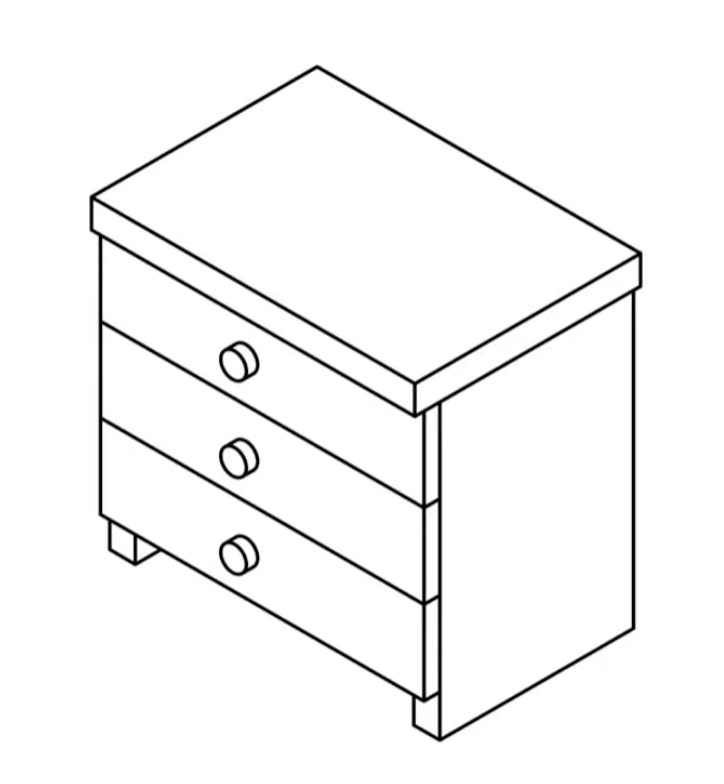
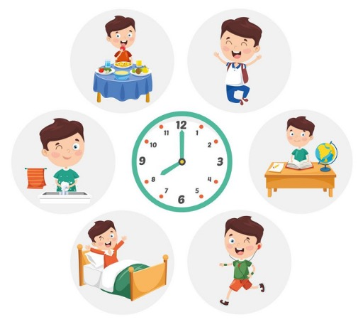

![]()
strPython Data Bootcamp
: for GIS Dummies
March 10, 2024
How will we cover it?
- Google Colab (by default)
- Install Python on your machine (Optional)
- Jupyter lab / Notebook / VS Code (Optional)

Make sure you are well set up with Google Colab using the URL below:
Helpdesk
- Wednesday 12pm-2pm: Lab Sessions
- Ed discussion is the place to go!
What will we cover for today?
- Simple Python
- Variables
- Data types
- Lists
forloops- Conditional Statements
For the first time
- Let’s type
Simple Python maths
End-of-Line Terminates a statement
- This is an assignment operation, where we’ve created a variable named
temperatureand assigned it the value 5. - Notice that the end of this statement is simply marked by the end of the line.
Whitespace Within Lines Does Not Matter
White spacewithin lines of Python code does not matter.- For example, all three of these expressions are equivalent
- Which line of code do you think is more readable?
Round brackets (Parentheses)
- They can be used in the typical way to group statements or mathematical operations
- Indicate that a function is being called.
print()
- The “()” after sort indicates that the function should be executed
- required even if no arguments are necessary
Python Semantics: Variables
- A variable can be used to store values calculated in expressions and used for other calculations
- A variable is a location in memory.
Variable as pointer
- You have created two variables x and y which both point to the same object.
- This makes perfect sense if you think of x and y as pointers
- The “=” operator as an operation that changes what the name points to.
Everything Is an Object
- Python is an object-oriented programming language, and in Python everything is an object.
- What does this mean?
- Python everything is an object
- This means every entity has some metadata (called attributes) and associated functionality (called methods).
- These attributes and methods are accessed via the dot syntax.
append method
- For example, before we saw that lists have an append method, which adds an item to the list, and is accessed via the dot (
.) syntax:
- Try this
Operators
- Addition (
a + b) – Sum ofaandb - Subtraction (
a - b) – Difference ofaandb - Multiplication (
a * b) – Product ofaandb - True division (
a / b) – Quotient ofaandb - Floor division (
a // b) – Quotient ofaandb, removing fractional parts - Modulus (
a % b) – Integer remainder after division ofabyb - Exponentiation (
a ** b) –araised to the power ofb - Negation (
-a) – The negative ofa
Comparison Operations
Another type of operation which can be very useful is comparison of different values.
Equality (
a == b) –ais equal tobInequality (
a != b) –ais not equal tobLess than (
a < b) –ais less thanbGreater than (
a > b) –ais greater thanbLess than or equal to (
a <= b) –ais less than or equal tobGreater than or equal to (
a >= b) –ais greater than or equal tob
Boolean Operations (and or not)
When working with Boolean values, Python provides operators to combine the values using the standard concepts of “and”, “or”, and “not”.
Built-In Types: Simple values
- A data type determines the characteristics of data in a programme
- Basic data types in Python.
| Data type name | Data type | Example |
|---|---|---|
int |
Whole integer values | 4 |
float |
Decimal values | 3.1415 |
str |
Character strings | ‘Freezing’ |
bool |
True/false values | True |
Data types: Strings
Strings (str) represent sequences of characters, e.g. I love GIS, Python is awesome, 1990. Note that a number will be of the type string when declared within quotations marks (““).
- We can concatenate strings using the addition operator:
- We also can perform upper and lower case transformations:
Data types: Numeric
- Addition
- Subtraction
- Multiplication
- Division
Data types: Numeric (more)
- Floor Division:
//operator is used to perform integer division (rounding down to the nearest integer). - Modulo:
%operator returns the remainder of the division operation. - Exponentiation
Data types: Boolean
- booleans allow us to test logic
- booleans give us the power of conditionals
Your Turn
- Print the
type()of:
- 153
- 8.8354
- Windy
- False
Built-In Data Structures
- Python has several built-in compound types, which act as containers for other types.
- These compound types are:
- List (
list) – Example:[1, 2, 3]– Ordered collection - Tuple (
tuple) – Example:(1, 2, 3]– Immutable ordered collection - Dictionary (
dict) – Example:{'a':1, 'b':2, 'c':3}– Unordered (key, value) mapping
- List (
- We will cover list in the lecture, and other in lab hours
Lists
When we have more clothes/items we would like to align similar types of clothes into a drawer
List Example 1
List Example 2
Let’s first create a list of selected station_name values and print it to the screen.
Index values
To access an individual value in the list we need to use an index value.
Python returns ‘Parnell’ instead of ‘Waitematā’. Can anybody guess why?
Index values
Modifying list values
Adding list values
Your Turn!
- Define
western_linein your environment - Add Mt Albert, Avondale, New Lynn, Fruitvale Rd, Glen Eden as a list (you can Google “Auckland Western Line” and find the Wikipedia)
- Assign that in your environment as
more_western - This time, try
extendto combine the two lists
Documentation
- At this point, you might think, Hang on, do I have to memorise everything?
- The answer is NO
- If you are stuck, visit https://www.python.org/doc
- Google your problem (Stackoverflow)
- ChatGPT and Gemini (🧐)
for loop
- Loops allow parts of code to be repeated some number of times
- Iterates over all of the items in a Python list and performing a calculation on each item.
vs
for loop: concept
Let’s break down the code above to see some essential aspect of for loops:
- The
variablecan be any name you like. - The statement of the
forloop must end with a colon (:) - The code that should be executed as part of the loop must be indented beneath the
forloop statement. - The typical indentation is 4 spaces.
- There is no additional special word needed to end the loop, you simply change the indentation back to normal.
Your daily for loop
for day in my_life:
wake_up()
take_shower()
eat_breakfast()
brush_teeth()
ride_beam()
come_to_lecture()
...
for loop: an example
Different example
Examples using range
Examples using range
Your Turn!
- The indices of the cities and countries are in the same order
- For example, Helsinki and Finland are in index 0
- Create a
forloop that describes something like Helsinki is the capital of Finland
Examples using two lists - Answers
Helsinki is the capital of Finland
Stockholm is the capital of Sweden
Oslo is the capital of Norway
Reykjavik is the capital of Iceland
Copenhagen is the capital of DenmarkConditional statements
- We will learn how to make choices in our code using conditional statements (
if,else) and Boolean values (True,False). - Conditional statements can change the code behaviour based on certain conditions.
- The idea is simple: IF a condition is met, THEN a set of actions is performed.
if else Example 1
if else Example 2
if statement without else
- The code indented under the if-statement is not executed if the condition is not True. Instead, code under the else-statement gets executed.
- How about if without else?
Conditional operator
if, elif and else
- We can link several conditions together using the “else if” -statement
elif. - Python checks the
elifand else statements only if previous conditions were False. - You can have multiple
elifstatements to check for additional conditions.
Combinations
Combining conditions
- We can also use and and or to combine multiple conditions on boolean values
| Keyword | Example | Description |
|---|---|---|
| and | a and b | True if both a and b are True |
| or | a or b | True if either a or b is True |
Combination Example
weather = "rain"
wind_speed = 14
comfort_limit = 10
# If it is windy or raining, print "stay at home",
# otherwise (else) print "go out and enjoy the weather!"
if (weather == "rain") or (wind_speed >= comfort_limit):
print("Just stay at home")
else:
print("Go out and enjoy the weather! :)")Just stay at homeCombining for-loops and conditional statements
- We can also combine for-loops and conditional statements.
- Let’s iterate over a list of temperatures, and check if the temperature is hot or not
Summary - What have we learned?
- Programming is not too difficult than you think. They are easy to understand and share (and fun!)
- Python is one of the popular programming languages - we are going to nail this!
- Basics of Python
- Basic programming
- Functions
- for loops
- Conditional statements
- Combos of the above
Next week
- Recap of today’s work + working on conditions
- How to import spreadsheet data on Colab: dataframe
- How to clean and use dataframes
References
- Tekanen et al. (2022), Introduction to Python for Geographic Data Analysis, https://pythongis.org/
- Rey et al. (2020), Geographic Data Science with Python, https://geographicdata.science/book
- Dorman et al (2023), Geocomputation with Python, https://py.geocompx.org/
Thanks!
Q & A